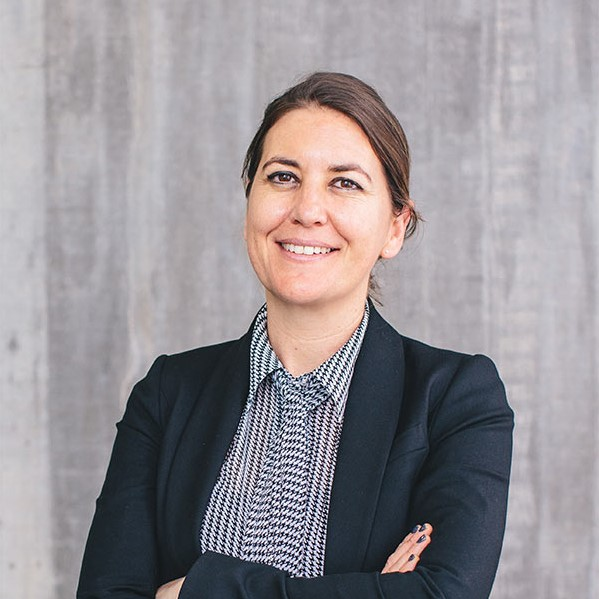

Staff Stories
Amanda Yates
Amanda’s passion for sustainability has played an important role in her work.
As a spatial designer, Amanda considers how her work can create a positive difference
for the planet. As a senior lecturer in spatial design at AUT, Amanda teaches ideas
relating to ecology and indigeneity. And, as someone who has won seven design awards
and three teaching and research awards, it’s fair to say that Amanda’s environmental
focused design work has not gone unnoticed. |
|
|  | Dr Christina Vogels
The year was 2000, and Dr Christina Vogels was a Bachelor of Communication Studies
student in the final year of her degree. She was given a project: create a communications
strategy for an external organisation. The Western Women’s Refuge was one of the students’
potential clients. Members of the refuge staff came to speak to the class, and it was at
that moment that Christina knew she would dedicate her life to standing up for women’s
rights. |
Josephine Prasad
Josephine Prasad has great passion and love for her students. And as the postgraduate
coordinator for the School of Engineering, Computer and Mathematical Sciences – one of
the largest postgraduate schools in the university – Josephine has many students she
loves to help. |
|
 |
Associate Professor Monique Redmond
“They used to put the tea leaves straight in the jug while it boiled, then pour from jug to
mug. I found watching this temporal social connection take place fascinating. It was like
taking a pause from the reality of the job.” |
Dr Kosala Gunawardane
“I remember in school we had to pick one of three subjects: music, dancing and
art. I didn’t want to pick any because I wasn’t good at artistic subjects, but
I always loved mathematics.” |
|
Dr Sarah Marshall
"From a teaching perspective I hope that I can inspire students and show them about
the areas of mathematics and statistics that I’m really interested in." |
|
 |
Dr Suzie Gorodi
As the loan central technician for the 4D labs, Suzie is in charge of managing
a collection of audio-visual equipment available free of charge to students
and staff within the school. |